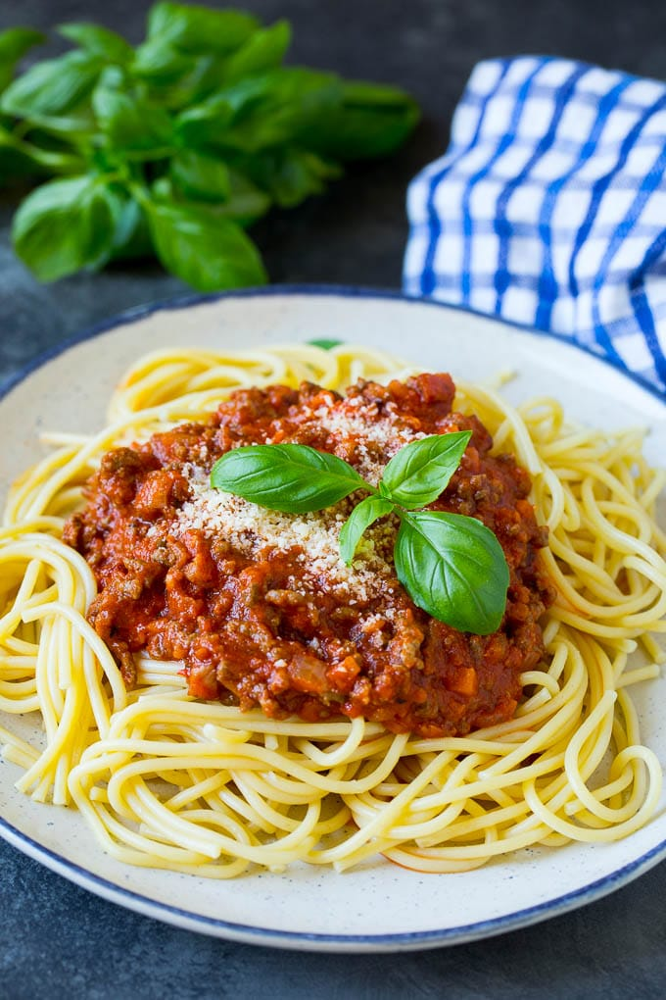

δεν χρειάζονται animation.
Κράτα animation μόνο σε:
sections
cards
hero
testimonials
και όχι σε κάθε μικρό στοιχείο.
5. Βάλε lazy loading παντού
Είδα ότι αρκετές εικόνες το έχουν.
Βάλε όμως σε όλες εκτός από την hero.
6. Μείωσε τα preload
Έχεις preload για CSS και hero image.
Μην κάνεις preload πολλές εικόνες.
Κράτα μόνο:
7. Χρησιμοποίησε WebP
Βλέπω ότι χρησιμοποιείς:

Έτσι αποφεύγονται τα layout shifts.
9. Άλλαξε το AOS
Αν έχεις:
data-aos="zoom-in"
είναι πιο βαρύ.
Προτίμησε:
data-aos="fade-up"
ή
fade
που είναι πιο ελαφριά animations.
10. Το μεγαλύτερο πρόβλημα
Βλέπω ότι χρησιμοποιείς περίπου 70-100 στοιχεία με data-aos.
Αυτό σημαίνει ότι το AOS πρέπει να παρακολουθεί όλα αυτά καθώς κάνεις scroll.
Αν τα μειώσεις στα 20-25, θα δεις αισθητή διαφορά.
Η εκτίμησή μου
Το HTML σου είναι ήδη σε καλό επίπεδο. Η μεγαλύτερη καθυστέρηση πιθανότατα οφείλεται:
50% στα πολλά AOS animations.
30% στις πολλές εικόνες που υπάρχουν στην αρχική σελίδα.
20% στη JavaScript και στις εξωτερικές βιβλιοθήκες (AOS, GLightbox, Font Awesome).
Αν εφαρμόσεις τις παραπάνω αλλαγές, είναι ρεαλιστικό να δεις βελτίωση της τάξης του 30–50% στον χρόνο που χρειάζεται για να εμφανιστεί και να γίνει πλήρως διαδραστική η σελίδα.
to defer ti einai ? kai auto einai epaggelmaitki h arxaria lisi document.addEventListener("DOMContentLoaded", () => {
document.querySelectorAll(".items .item").forEach((el,i)=>{
el.dataset.aosDelay=i*80;
});
AOS.init({
once:true,
duration:400,
easing:"ease-out"
});
});?
Ναι, είναι επαγγελματική λύση. Στην πραγματικότητα είναι η λύση που χρησιμοποιούν οι περισσότεροι προγραμματιστές σήμερα.
1. Τι κάνει το defer;
Όταν έχεις:
ο browser κάνει τα εξής:
Διαβάζει το HTML.
Βλέπει το
γίνεται:
Διαβάζει το HTML.
Κατεβάζει παράλληλα το JavaScript.
Συνεχίζει να εμφανίζει τη σελίδα.
Όταν τελειώσει το HTML, τότε εκτελεί το JavaScript.
Έτσι η σελίδα εμφανίζεται πιο γρήγορα.
Για αυτό σχεδόν όλες οι σύγχρονες ιστοσελίδες χρησιμοποιούν defer.
2. Γιατί είναι καλύτερο το DOMContentLoaded;
Εσύ έχεις:
window.addEventListener("load", () => {
AOS.init();
});
Το load σημαίνει:
Περίμενε να φορτώσουν όλα.
Δηλαδή:
όλες οι εικόνες ✔
όλα τα webp ✔
όλα τα css ✔
όλα τα fonts ✔
όλα τα scripts ✔
Αν έχεις 60 εικόνες, μπορεί να περιμένει αρκετά.
Το
document.addEventListener("DOMContentLoaded", () => {
});
σημαίνει:
Μόλις τελειώσει το HTML, ξεκίνα.
Δεν περιμένει τις εικόνες.
Έτσι το menu, τα κουμπιά και το AOS ενεργοποιούνται νωρίτερα.
3. Είναι επαγγελματική λύση;
Ναι.
Σχεδόν όλα τα frameworks κάνουν κάτι αντίστοιχο.
React ✔
Vue ✔
Angular ✔
Next.js ✔
Δεν χρησιμοποιούν window.load για τέτοια πράγματα.
4. Εγώ θα έγραφα έτσι
document.addEventListener("DOMContentLoaded", () => {
document.querySelectorAll(".items .item").forEach((el, i) => {
el.dataset.aosDelay = i * 80;
});
AOS.init({
once: true,
duration: 400,
easing: "ease-out"
});
});
Είναι καθαρό, γρήγορο και επαγγελματικό.
Μια μικρή βελτίωση
Αφού βάλεις:
δεν χρειάζεσαι καν το DOMContentLoaded, γιατί το defer εγγυάται ότι το script θα εκτελεστεί αφού έχει φορτωθεί όλο το HTML.
Άρα μπορείς απλά να γράψεις:
document.querySelectorAll(".items .item").forEach((el, i) => {
el.dataset.aosDelay = i * 80;
});
AOS.init({
once: true,
duration: 400,
easing: "ease-out"
});
Αυτή είναι επίσης μια απολύτως επαγγελματική και πολύ συνηθισμένη προσέγγιση, αρκεί όλα τα scripts να φορτώνονται με defer.
A confident 25-year-old woman in a stylish summer outfit, standing in a modern café while ordering coffee, front-side profile view. She has long wavy light brown hair, a small nose, and a relaxed confident expression. She is wearing a white fitted tank top, high-waisted beige linen trousers, white sneakers, and a lightweight pastel cardigan casually draped over her shoulders with the sleeves loosely tied in front. Warm morning sunlight, natural lighting, realistic fashion photography, candid lifestyle shot, shallow depth of field.
Δημιουργημένη εικόνα: Φωτεινός καφές με χαλαρή ατμόσφαιρα
Επεξεργασία
post code ti shmaini
Ετοιμάζουμε καθημερινά νόστιμα πιάτα με τα καλύτερα υλικά.
Εξερευνήστε το Μενούμακαρόνια,μοσχαρίσιος κιμάς,μπεσαμέλ

Παστίτσιο
ρύζι, κουκουνάρι και μυρωδικα

Γεμιστά Καλαμαράκια
ζαμπόν και κρέμα γάλακτος,τυριά(γκούντα,ένταμ).

Γεμιστές Κρέπες
γαρίδες,λιγκουίνι,σάλτσα ντομάτας.

Γαριδομακαρονάδα

Γιουβέτσι με Κριθαράκι





Ο Μουσακάς ήταν σαν σπιτικός! Είδα ότι έχετε και άλλα πιάτα ημέρας, οπότε θα ξαναπαραγγείλουμε σίγουρα με την παρέα.

Πρέπει να δοκιμάσετε τα Σουτζουκάκια! Είναι πολύ νόστιμα. Μου άρεσε που το μενού έχει τόσες πολλές επιλογές από παραδοσιακά μέχρι πιο μοντέρνα. Πολύ καλή εμπειρία.

Παραγγέλνω από εδώ συχνά. Το Παστίτσιο είναι απλά τέλειο.

Σωτήριο για μέρες που δεν προλαβαίνω να μαγειρέψω. Τα παιδιά λατρεύουν τις Κρέπες και εμείς βρίσκουμε πάντα ένα καλό μαγειρευτό!